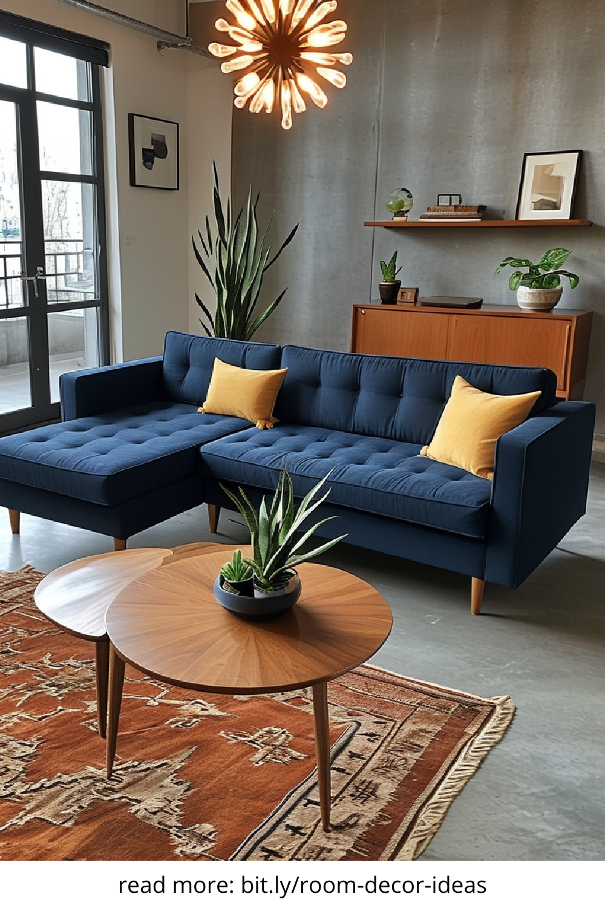
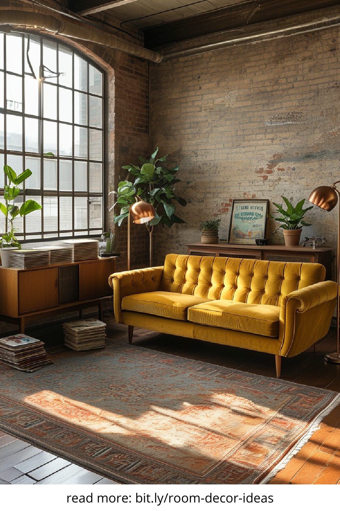
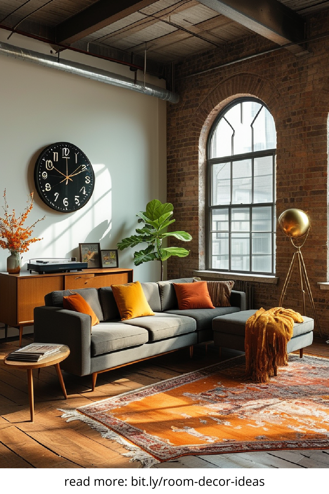
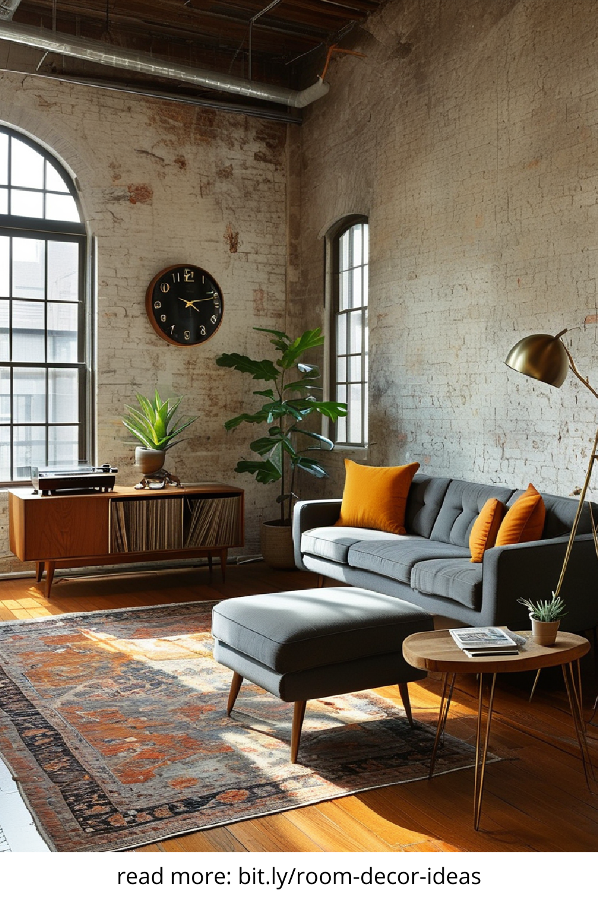

Vintage home decor has experienced a major resurgence in recent years, captivating homeowners and interior designers alike with its timeless charm, history-infused character, and eco-conscious appeal. This nostalgic style blends elements from past eras to create warm, lived-in spaces that feel both elegant and personal. Whether you're a seasoned collector or just dipping your toes into vintage aesthetics, understanding how to effectively incorporate vintage decor into your home can transform your space into a storytelling sanctuary.
The modern consumer is growing increasingly disillusioned with mass-produced, disposable items. Instead, there's a renewed appreciation for craftsmanship, authenticity, and sustainability—values that vintage home decor embodies naturally. With its rich textures, aged patinas, and history-soaked pieces, vintage decor offers an aesthetic that’s hard to replicate with brand-new furnishings. It provides a sense of depth and narrative, elevating interiors beyond mere function and into the realm of artistry.
Achieving a harmonious balance between old and new is key to a successful vintage-inspired interior. One effective method is to anchor the room with a statement vintage piece—such as a mid-century sideboard, an ornate mirror, or a classic wingback chair—and layer modern accents around it. This contrast creates a dynamic and curated look, avoiding the feeling of living in a time capsule. Consider blending neutral color palettes with bold retro patterns or integrating vintage lighting fixtures into a sleek, modern kitchen for a truly innovative fusion.
Vintage home decor is inherently sustainable. By choosing to reuse and repurpose items from the past, you're diverting waste from landfills and reducing the demand for new manufacturing. Many vintage items, particularly those made before the era of planned obsolescence, were built to last. Solid wood furniture, for instance, often outperforms many modern equivalents in durability. Decorating with vintage also supports local thrift shops, antique dealers, and flea market vendors, promoting community-based commerce and ethical consumerism.
Scoring the perfect vintage piece is a thrill that combines the excitement of treasure hunting with the reward of discovery. Start with local antique stores, estate sales, and flea markets for in-person browsing. Online platforms like Etsy, Chairish, and eBay also offer curated selections of vintage home decor. Social media platforms, especially Instagram and Pinterest, are brimming with sellers who specialize in vintage styling. When shopping, prioritize quality over quantity and don’t shy away from items with minor imperfections—they add to the charm and story.
One of the joys of vintage decorating is curating a space over time. However, the challenge lies in keeping the overall aesthetic cohesive rather than chaotic. Stick to a consistent color scheme or era to unify your pieces. Group similar items—such as vintage books, ceramic vases, or retro clocks—in vignettes to give your decor intentionality. Incorporating modern minimalist elements can provide visual relief and allow your vintage finds to shine without overwhelming the room.
Vintage home decor is more than just a style—it’s a lifestyle choice that values history, individuality, and environmental responsibility. By weaving vintage elements into your home, you’re not only embracing beauty and craftsmanship from the past but also crafting a space that’s uniquely yours. Whether you go all-in with a full vintage overhaul or simply introduce a few well-chosen pieces, the charm of vintage home decor is sure to enrich your living environment in meaningful and memorable ways.
   